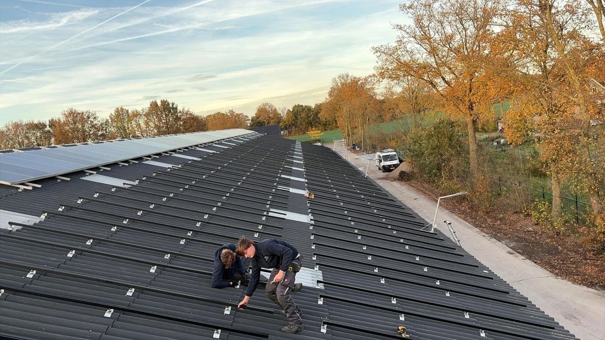
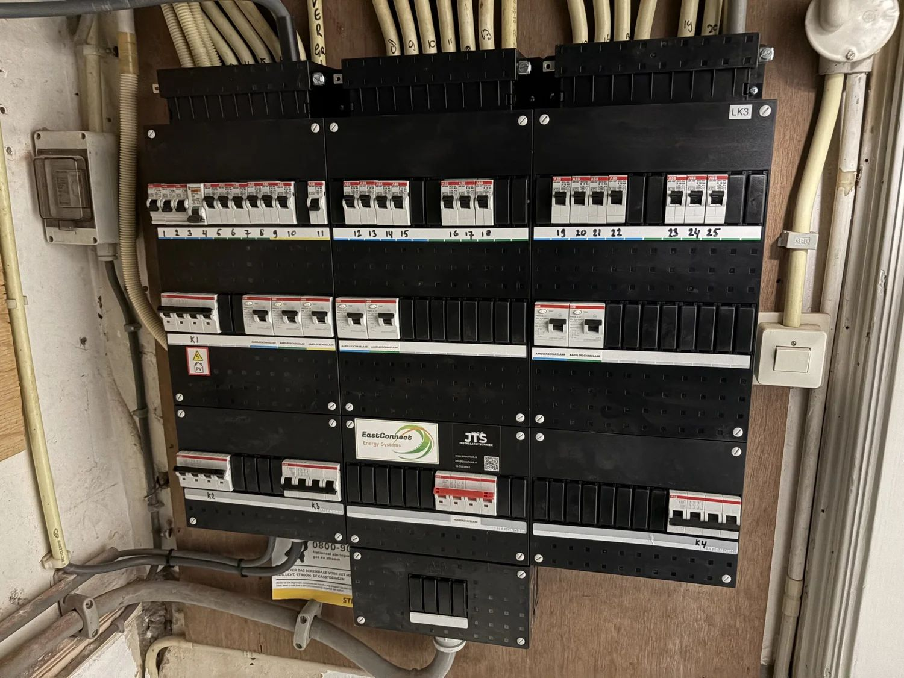
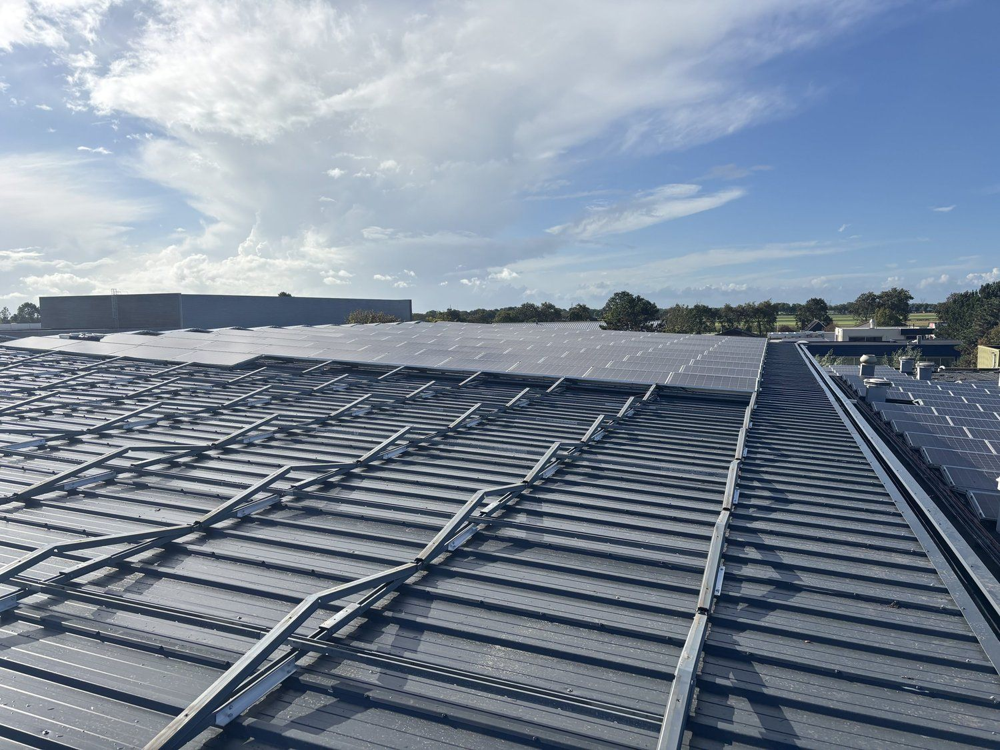
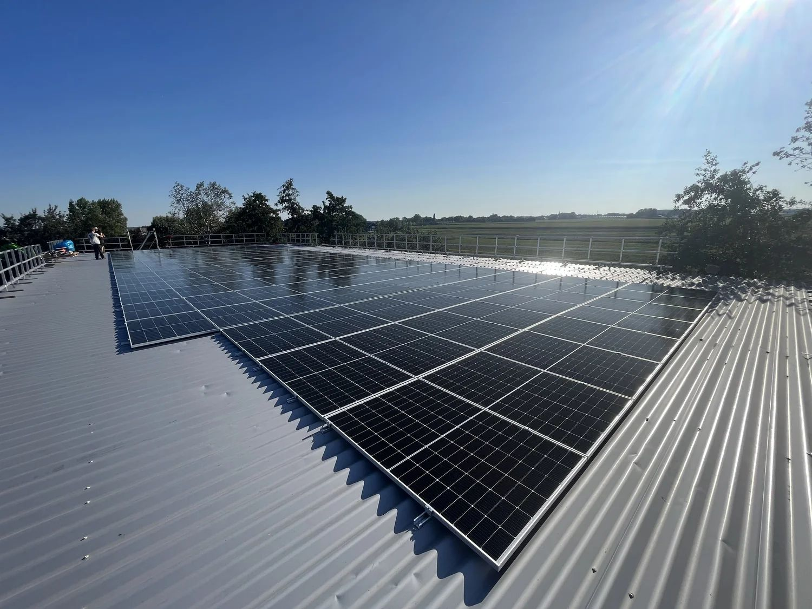

In december 2022 schreven wij ons in bij de Kamer van Koophandel. De afgelopen jaren hebben we enorme stappen gezet. Soms sta je daar te weinig bij stil, terwijl het bijzonder is om te zien hoe ver je kunt komen door te doen, te leren en steeds beter te worden.
Hoewel we nog niet staan waar we uiteindelijk naartoe willen, kijken we met vertrouwen vooruit. Onze focus ligt niet op de korte termijn. We denken in jaren: in groei, ontwikkeling en duurzame relaties met onze klanten en partners. De komende jaren staan in het teken van verdere professionalisering, innovatie en het blijven leveren van kwaliteit waar wij volledig achter staan.
Hoe het begon
Jesse Odijk en Tjark Boot begonnen hun carrière in de duurzaamheidssector bij Greenlink Nederland B.V., een solarbedrijf waar zij veel praktijkervaring opdeden. Daar leerden zij de eigenaren Maarten Strengers en Jaap de Jong goed kennen — prachtige mensen die dicht bij ons hart staan.
Stijn Ronner werkte in die periode in de horeca en volgde zijn eigen pad. We kenden elkaar al langere tijd, maar het samen ondernemen kwam pas later. Toen duidelijk werd dat onze ambities en mentaliteit goed bij elkaar pasten, besloten we de krachten te bundelen.
In de beginfase maakten we letterlijk onze handen vuil. We deden alles wat nodig was, met een sterke focus op het schoonmaken en onderhouden van zonnepanelen. Vanuit daar groeiden we stap voor stap door naar waar onze echte passie lag: het installeren en realiseren van grotere zonnestroominstallaties.
Groeien door te doen
Na verloop van tijd kwam DenG Solar op ons pad, een betrouwbare energiepartner waar we inmiddels al jaren mee samenwerken. Binnen DenG leerden we Theo Mostert en Paul van Scharrenburg goed kennen. Zij zagen onze motivatie, leergierigheid en oog voor kwaliteit, en gaven ons het vertrouwen om verder te groeien. Daar zijn wij zeer dankbaar voor.
Ons eerste grote project binnen deze samenwerking was de installatie van 400 zonnepanelen bij JdB Groep in Nieuwveen: ons eerste project als onderaannemer en een belangrijk moment in onze ontwikkeling. Door onze inzet en focus op kwaliteit groeide het vertrouwen snel. Met én dankzij DenG Solar hebben wij inmiddels meer dan 10.000 zonnepanelen mogen installeren, met vele foutloze Scope-12-keuringen. Een prestatie waar we trots op zijn en die veel zegt over de manier waarop wij werken.




Naast zonnepanelen breidden we onze werkzaamheden stap voor stap uit. Ons eerste laadpalenproject mochten we uitvoeren voor Willem Boot. Hij gaf ons in een vroege fase het vertrouwen en de ruimte om te leren, te groeien en verantwoordelijkheid te nemen, iets wat wij enorm waarderen.
Natuurlijk ging niet alles in één keer perfect. Sommige keuzes hadden achteraf beter gekund en sommige oplossingen zijn nog altijd work in progress. Wat wél altijd vaststond: wij draaien ervoor op, nemen verantwoordelijkheid en laten zien dat we er staan — ook als het ingewikkeld wordt.
Die ontwikkeling leidde uiteindelijk tot steeds zwaardere en technisch uitdagendere projecten, waaronder het vervangen van een 3×250 ampère meterkast bij Raadsheeren. Een project dat laat zien hoe ver we inmiddels zijn gekomen en waar we als team trots op zijn. Tegelijkertijd hebben we onze kennis steeds verder verbreed. Naast zonnepanelen zijn we ons gaan specialiseren in batterijsystemen, laadpalen, meterkasten, verlichting en elektrische renovaties. We werken volgens de NEN 1010- en NEN 3140-normen en blijven ons continu ontwikkelen.
Waar we nu staan
Vandaag bestaat JTS Installatietechniek uit een hecht en groeiend team. Naast de oprichters werken Ruben Striekwold en Sebastiaan Odijk bij ons in dienst. Ruben is er vrijwel vanaf het begin bij en heeft zich ontwikkeld tot een echte vakman; het is super leuk om als team elkaar te zien groeien. Sebastiaan, de broer van Jesse, versterkt het team met dezelfde inzet en mentaliteit.
Samen bouwen we verder aan JTS Installatietechniek: een nuchter, technisch sterk installatiebedrijf dat staat voor kwaliteit, verantwoordelijkheid en oplossingen die klaar zijn voor de toekomst. De komende jaren staan in het teken van verdere groei en ontwikkeling. Er zijn veel nieuwe stappen in voorbereiding, en dat zal zichtbaar worden. Wij zijn nog lang niet klaar in deze sector.
JTS en NuZon
Sinds januari zijn wij ook de eigenaren van NuZon B.V., dat sinds 2012 zonnepanelen plaatst vanuit Soest. NuZon en JTS zijn twee zelfstandige bedrijven met dezelfde eigenaren: NuZon is de naam, de historie en de klanten, JTS Installatietechniek doet het werk. Bezoek NuZon.